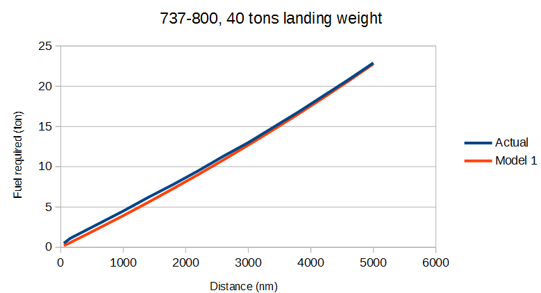
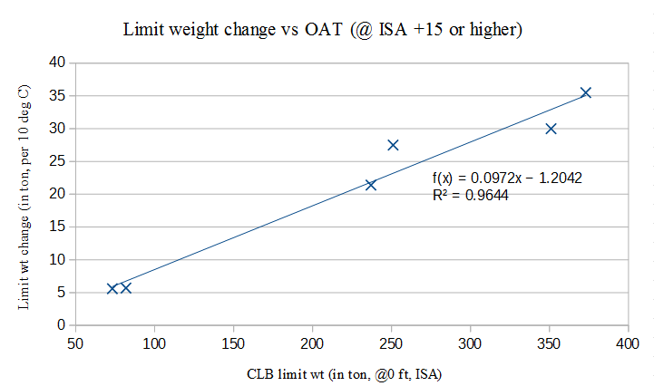

QSimPlanner Design Document
0. Preface
The purpose of this document is to record the various analysis done during the design process, and we hope it will help in understanding why the application is designed to work in certain ways. It does not cover the entire application and does not include many specifications. If you want to know "how" the program works instead of "why", then you probably should directly read the code.
1. Fuel Consumption Profile Model
1.1 Analysis of available data
We first analyze some of the data from FCOM (Flight Crew Operations Manual) to determine the assumptions we can make to simplify the model. A fully-detailed fuel consumption model is very time-consuming to develop, if possible at all. The project goal requires a more practical, yet reasonably precise model. That’s why we need to establish some useful assumptions.
1.1.1 Gross weight-fuel flow relation
We took some data from the FCOMs of 737-800 and 777-200LR. Here are the results.


It’s clear that fuel flow varies almost linearly with the gross weight, even if the range of weight data is pretty large. The data used can be found in appendix.
1.1.2 Flight distance – fuel required relation
Linear approximation is a lot less accurate in this case. The differences between actual and approximated fuel requirement is more than 10 tons for 10000 nautical mile mission, with 240 tons landing weight. Below is the fuel-distance relation of 777-200LR, with landing weights of 150 and 240 tons. Numerical data is in the appendix.
1.1.3 Cruise speed approximation
We need to develop a method to approximate the cruise speed, with different weights. The goal is to find a simple relation which can reasonably approximate the cruise speed. The following charts are generated from FCOM data. It’s based on LRC (long range cruise) and optimum cruising altitude and airspeed. The corresponding tables can be found in appendix.
Mach number

True Airspeed (TAS)


Indicated Airspeed (IAS)
As we can see, IAS is the best choice among the three. In a long haul flight, the errors induced by approximation are likely to be canceled out because the aircraft usually cruises at several different altitudes.
1.1.4 Optimum cruising altitude
We plot the relation between optimum cruising altitude and weight of the aircraft. The error of linear approximation is not small, but whether it’s acceptable depends on the context.


1.2 What does not work
1.2.1 Payload-range diagram
The payload-range diagram is easily accessible on the Internet, but hidden parameters which are not specified in the diagrams cause significant inaccuracy.
Most aircraft manufacturers publish airport planning manual on the Internet, including Airbus, Boeing, Embraer, etc. The problem is that we do not know the amount of final reserve fuel, contingency fuel or distance to alternate airport used in generating these diagrams.
We will try to build a payload-range diagram from the Boeing 737-800 FCOM data, and see why the charts alone is insufficient to build an accurate fuel consumption profile. We only focus on the segment where range is limited by fuel capacity. See image below (image source).
As a comparison, below is the payload-range chart in Boeing’s airport planning manual, for 737-800. In the test, we use 20,894 kg of fuel capacity and plot the ranges with 40 to 50 tons of zero fuel weight.
Here are the results with different parameters below. The left one assumes no final reserve, go-around, or contingency fuel. The right one assumes 45 minutes of final reserve, one go-around, and 5% contingency fuel. The results are noticeably different. At 40 tons, the ranges are different by about 16%. This is not acceptable.
The code which produced these charts are in code/PayloadRangeChart. (x-axis: range in nm, y-axis: zfw in ton)


1.3 Models
The data used in model 1, 2 and 3 below are extracted from a PFPX profile for 737-800. See appendix for numerical values produced by the models. The code which produced these charts are in code/Models.
1.3.1 Model 1
Assumptions:
- Fuel flow and TAS are linear functions of weight.
- The aircraft travels at optimum cruising altitude in the entire flight. Climb and descent are ignored.
Parameters:
| 40 tons | 85 tons | |
| Fuel flow (kg/hr) | 1626.0 | 3183.8 |
| TAS (knots) | 430 | 464 |
Results:
Because climb and descent phases are ignored, this model underestimates fuel consumption. The deviation can be more than 0.6 tons, for both landing weights.
1.3.2 Model 2
Assumptions:
- Cruise fuel flow, TAS, climb gradient, climb fuel flow, descend gradient and descend fuel flow are linear functions of weight.
- The aircraft cruises at optimum cruising altitude.
- Climb and descent speeds are constant.
Parameters:
| 40 tons | 85 tons | |
| Fuel flow (kg/hr) | 1626.0 | 3183.8 |
| TAS (knots) | 430 | 464 |
| Climb gradient | 0.08997 | 0.04299 |
| Climb fuel flow (kg/hr) | 5125.0 | 5648.0 |
| Descend gradient | 0.06681 | 0.04661 |
| Descend fuel flow (kg/hr) | 785.0 | 865.0 |
* Climb and descent airspeed are 280 knots (indicated airspeed).
Results:
The two following charts compare the fuel burn of actual and model 2. For range less than 200 nm model 2 does not produce correct result at all. This is expected since at those distances, the aircraft will not climb to its optimum cruising altitude at all, and the model does not address this situation. However, at other distances the error is smaller than model 1. For these 2 charts, the maximum errors are 0.46 and 0.29 tons, respectively. Also, at ranges larger than 500 nm, the deviation gradually increases with distance, which means the percentage of error stays roughly the same.
1.3.3 Model 3
Assumptions and parameters are the same as model 2, except:
- Flights on which the aircraft never reaches optimum cruising altitude are properly handled.
- IAS is linear functions of weight instead of TAS.
(IAS (knots) = 1.8028 * gross weight (ton)+ 143.8652)
Results:
The errors are mostly eliminated at short ranges, due to correct climb/descent computation. At long range the errors are decreased by using IAS for approximation.

2. Takeoff performance model
2.1 Climb limit weight
Some assumptions are made to simplify the computation of climb limit weights. Observe the following chart (from B777-200LR FPPM), we can see some useful relations.
At low OAT, the climb limit weight changes almost linearly with pressure altitude, except for altitudes below sea level. In those cases the linear model underestimates the limit weight, which is not a big issue.
The slope of the lines changes abruptly at ISA + 15°C. This is because the engines are designed to generate a fixed amount of thrust (called flat rated thrust) until FRT (flat rated temperature), which is usually ISA + 15°C. For more info see page 30 and 31 of this document from CFM.
After ISA + 15°C, the limit weight decreases roughly linearly with temperature, and the slope is hardly affected by the pressure altitude.
To further investigate how the limit weight changes with respect to altitude and OAT, we analyze 6 aircraft types and plot some charts. The numerical data can be found in appendix.
The results are not particularly satisfactory, but it can be useful when the exact data cannot be found for certain aircraft types. At some point I wondered whether the thrust-to-weight ratio has some effects in the limit weight change. The answer turns out to be false.

Unfortunately sometimes we do not even know the climb limit weight at sea level, in standard conditions. In the worst case we can still estimate it with the engine thrust rating. It is inaccurate and should only be used if no other solution is available. (Data source is the same as the above charts.)
2.2 Field limit weight
This can be easily obtained from airport planning manual. However, several parameters need to be taken into account. How do we correct for wet runway, wind, runway slope, OAT and packs off/anti-ice on takeoffs?
2.2.1 Wet runway correction
This part is a particularly complicated task and there does not seem be a simple enough model for this correction. We end up doing a very simple estimation – decrease the field limit weight by a fixed percentage for all aircraft types, OAT and elevation. To make sure the computed limit weight is no larger than the actual value, 2.5% is used (see below for the origin of this number).
Existing data are analyzed below and the charts will demonstrate what approximation models do not work. The data can be found in src\QSP\PerformanceData\TO.
First, we analyze the takeoff field limit weights and plot the difference between dry and wet runway. See the 4 charts below. The plotted curves do not include any data points with weight limited by maximum takeoff weight. There does not seem to be much commonality between these 4 charts. In particular, higher OAT generally leads to a bigger limit weight difference for the 777-300ER at 0 ft, but that’s completely untrue for the 737-800.


Dividing the weight difference by the corresponding dry field limit weight does not produce better result, either.

Plotting lines by runway length does not look any better.

Fortunately we can still simplify the problem by subtract a fix percentage of limit weight from the “dry” value to get an estimation of the “wet” value.
| Aircraft type | Max percentage increase (@ 0 ft, -40 to 50 ° C) |
| 737-600 | 9.42 |
| 737-700 | 2.45 |
| 737-800 | 2.34 |
| 737-900 | 2.60 |
| 777-200LR | 2.74 |
| 777-300ER | 3.05 |
| 747-8F | 0.00 |
| 787-8 | 1.89 |
There are two values are quite special. The 737-600 has a very high decrease in field limit weight because the limiting factor is stopping distance. The wet runway increases stopping distance dramatically while doing little to help acceleration since the takeoff roll is relatively short. The 747-8F actually has increased limit weight when runway is wet. Probably this is because the limiting factor is 1.15 times the accelerate-go distance (since it has 4 engines which makes stopping distance less of an issue because the relatively large gap between V1 and VR).
2.2.2 OAT correction
The temperature correction is similar to the climb limit weight correction, except the field limit weight decreases when temperature rises. The reason is reduced air density at higher temperatures making the takeoff true air speed higher. The ISA temp + 15 °C discontinuity of slope is still there, as shown in the following chart.
We analyzed the field limit weight change per 10°C, for both temperatures above or belowe ISA+15°C. The result is the below image. Numerical data can be found in A.6.
Apart from the 737-600, the trend is fairly predictable and can generally be reasonably accurate for simulation purposes.
2.2.3 Wind correction
We apply wind correction to the runway length. The relation is fairly straght-forward and does not vary too much between aircraft types.
| Aircraft type | 10 kts tailwind correction | 10 kts headwind correction |
|---|---|---|
| 737-600 | 12.33333 | 3.33333 |
| 737-700 | 14.07 | 4.07 |
| 737-800 | 13.33333 | 4.0 |
| 737-900 | 13.95 | 4.19 |
| 777-200LR | 14.0 | 4.22 |
| 777-300ER | 13.0556 | 4.167 |
| 747-8F | 13.0 | 3.7778 |
| 787-8 | 13.70 | 3.7778 |
2.2.4 Slope correction
By analyzing the slope correction data for 777-300ER and 737-800, on dry runway,we see the relation is not so simple. An incline reduces the takeoff acceleration but decreases the stopping distance in case of an rejected takeoff. Nevertheless, we can use a simple approximation
where a is about 0.06 (for 777-300ER) or 0.1 (for 737-800).
2.2.5 Other factors
In case of pack off or anti-ice on takeoffs, the limit weight correction may only be guessed based on the values for other aircraft types. Refer to A.5 for some existing values.
3. Landing distance model
From airport planning manuals, we can obtain the landing distance at different weights, with max braking and dry runway. Some charts may contain data for wet runways.
3.1 Corrections for dry runway
Normally, the factors affecting landing distance includes aircraft weight, brake and flaps setting, pressure altitude, temperature, wind, runway slope, and approach speed.
We will inspect each of these factors and develop some methods to approximate their influence (apart from aircraft weight, which is already contained in airport planning manuals).
3.1.1 Brake and flaps setting
Among these factors, the brake/flaps setting is the most difficult one to account for due to lack of data. To make matters worse, the number of available autobrake settings varies between aircraft types. Nevertheless, we still list the braking distances for reference.
For 737-800:
| Brake setting | Landing distance (relative to Max Manual) |
|---|---|
| Max Manual | 1 |
| Max Auto | 1.272 |
| Autobrake 3 | 1.789 |
| Autobrake 2 | 2.294 |
| Autobrake 1 | 2.522 |
For 777-300ER:
| Brake setting | Landing distance (relative to Max Manual) |
|---|---|
| Max Manual | 1 |
| Max Auto | 1.349 |
| Autobrake 4 | 1.749 |
| Autobrake 3 | 2.060 |
| Autobrake 2 | 2.322 |
| Autobrake 1 | 2.563 |
The effect of flap setting is probably contributed by the change of approach speed. Therefore it may be corrected that way.
3.1.2 Pressure altitude
We only consider the case with maximum braking, since other cases can be computed by multiplying the appropriate factor in previous section.
For both 777-300ER and 737-800, the altitude adjustment per 1000 ft is about 2.2%.
3.1.3 Temperature
With max. manual braking, the correction for 737-800 and 777-300ER is 2.2% for every 10°C above or below ISA temperature.
3.1.4 Wind
The wind correction for 737-800 is 12.22% per 10 knots tailwind, and 3.889% per 10 knots headwind. For 777-300ER, it's 15% per 10 knots tailwind and 4% per 10 knots headwind.
3.1.5 Runway slope
Correction for every 1% slope is 1.11% for 737-800, and 1.17% for 777-300ER.
3.1.6 Approach speed
For every 10 knots above Vref, the correction is 7.22% for 737-800 and 8% for 777-300ER.
3.2 Correction for wet runway
This one is not easy as the landing distance varies greatly with the runway surface condition. For example, the Boeing manuals provide data for "good", "medium" and "poor" reported braking actions. The landing distances with max manual braking, compared to the one for dry runway, are 139%, 188% and 244% respectively (737-800, flaps 30).
Due to simulator limitations, the wet runway correction probably is not that accurate even if the manufacturer's figures are used. In some simulators all wet runways have the same friction coefficient, so we may as well use a fixed percentage increase as correction.
4. ETOPS models
There are 3 ETOPS scenarios, one-engine out, decompression and one-engine out with decompression. In terms of fuel requirement, usually the most limiting one is decompression.
4.1 Distance calculation
When planning ETOPS diversion, it's assumed that the aircraft flies at long range cruise speed. With engine failure, the optimum cruise speed is lower. So we estimate the distance based on 10000 ft cruise with one engine inoperative. Wind correction and the descent from 10000 ft have to be considered.
For this calculation the required parameters are:
- ETOPS rule (ETOPS-180, etc)
- Cruise speed at 10000 ft with one engine out
- Wind aloft
4.2 Fuel calculation
The most limiting scenario, i.e. fuel critical scenario, is either decompression or one-engine out with decompression.
A. Appendix
A.1 Gross weight-fuel flow data
Data for 737-800
| Gross weight (ton) | Fuel flow per engine (kg/hr) |
| 360 | 5186.5 |
| 340 | 4917 |
| 320 | 4554 |
| 300 | 4240 |
| 280 | 3976 |
| 260 | 3678 |
| 240 | 3392 |
| 220 | 3131 |
| 200 | 2878.5 |
| 180 | 2616.5 |
| 160 | 2356 |
Data for 777-200LR
| Gross weight (ton) | Fuel flow per engine (kg/hr) |
| 360 | 5186.5 |
| 340 | 4917 |
| 320 | 4554 |
| 300 | 4240 |
| 280 | 3976 |
| 260 | 3678 |
| 240 | 3392 |
| 220 | 3131 |
| 200 | 2878.5 |
| 180 | 2616.5 |
| 160 | 2356 |
A.2 Fuel-distance relation
| Distance (Nm) | Fuel required (150 tons) | Fuel required (240 tons) |
| 50 | 1.4 | 2.1 |
| 100 | 2.2 | 3 |
| 150 | 3 | 3.9 |
| 200 | 3.5 | 4.8 |
| 250 | 4.1 | 5.6 |
| 300 | 4.7 | 6.3 |
| 350 | 5.1 | 7 |
| 400 | 5.6 | 7.8 |
| 450 | 6 | 8.5 |
| 500 | 6.4 | 9.2 |
| 1000 | 11.8 | 16.5 |
| 1500 | 16.9 | 24.2 |
| 2000 | 22.1 | 32.2 |
| 2500 | 27.4 | 40.1 |
| 3000 | 32.9 | 48.3 |
| 3500 | 38.5 | 56.7 |
| 4000 | 44.2 | 65.5 |
| 4500 | 50.1 | 74.2 |
| 5000 | 56.2 | 83.4 |
| 5500 | 62.5 | 92.9 |
| 6000 | 68.9 | 102.8 |
| 6500 | 75.4 | 112.9 |
| 7000 | 82.1 | 123.2 |
| 7500 | 89 | 133.8 |
| 8000 | 96.1 | 144.6 |
| 8500 | 103.4 | 155.8 |
| 9000 | 111 | 167.4 |
| 9500 | 118.7 | 179.1 |
| 10000 | 126.6 | 191.3 |
A.3 Data for Cruise speed approximation
737-800
| Weight (ton) | Mach | Opt Alt (1000 ft) | Ktas | IAS |
| 85 | 0.787 | 30 | 464.063544055553 | 298.442765118987 |
| 80 | 0.7895 | 32 | 461.487866087246 | 286.645963206286 |
| 75 | 0.789 | 33 | 459.158588978863 | 280.139781379947 |
| 70 | 0.786 | 34 | 455.374430075822 | 272.75592849207 |
| 65 | 0.788 | 36 | 452.418463568056 | 261.289553598091 |
| 60 | 0.7895 | 38 | 453.049537842304 | 249.880417340455 |
| 55 | 0.7905 | 40 | 453.623381462117 | 238.556151140105 |
| 50 | 0.786 | 41 | 514.16388335238 | 231.350976451891 |
| 45 | 0.773 | 41 | 443.581118115391 | 227.089068390549 |
| 40 | 0.749 | 41 | 429.80887123988 | 219.276941462959 |
777-200LR
| Weight (ton) | Mach | Opt Alt (1000 ft) | Ktas | IAS |
| 360 | 0.8385 | 28 | 464.063544055553 | 333.925516816223 |
| 340 | 0.8395 | 28 | 465.063544055553 | 334.364026881772 |
| 320 | 0.8395 | 30 | 466.063544055553 | 320.433890427799 |
| 300 | 0.8385 | 32 | 467.063544055553 | 306.38517767645 |
| 280 | 0.839 | 32 | 468.063544055553 | 306.588281142455 |
| 260 | 0.839 | 34 | 469.063544055553 | 293.248035286751 |
| 240 | 0.839 | 36 | 470.063544055553 | 280.207959017688 |
| 220 | 0.839 | 38 | 471.063544055553 | 267.473443162044 |
| 200 | 0.839 | 40 | 472.063544055553 | 255.049262125644 |
| 180 | 0.839 | 42 | 473.063544055553 | 242.939565510524 |
| 160 | 0.838 | 43 | 474.063544055553 | 236.683247213854 |
A.4 Data for the models (x: landing weight (ton), y: distance (nm))
A.4.1 Actual values (from Boeing FCOM)
| 40 | 45 | 50 | 55 | 60 | 65 | 70 | |
| 50 | 0.5 | 0.5 | 0.6 | 0.6 | 0.7 | 0.7 | 0.7 |
| 100 | 0.8 | 0.9 | 0.9 | 1 | 1 | 1.1 | 1.1 |
| 150 | 1.1 | 1.1 | 1.2 | 1.3 | 1.3 | 1.4 | 1.5 |
| 200 | 1.3 | 1.4 | 1.5 | 1.6 | 1.6 | 1.7 | 1.8 |
| 250 | 1.5 | 1.6 | 1.7 | 1.8 | 1.9 | 2 | 2.1 |
| 300 | 1.7 | 1.8 | 1.9 | 2.1 | 2.2 | 2.3 | 2.4 |
| 350 | 1.9 | 2 | 2.2 | 2.3 | 2.4 | 2.6 | 2.7 |
| 400 | 2.1 | 2.2 | 2.4 | 2.5 | 2.7 | 2.9 | 3 |
| 450 | 2.3 | 2.5 | 2.6 | 2.8 | 3 | 3.1 | 3.3 |
| 500 | 2.5 | 2.7 | 2.8 | 3 | 3.2 | 3.4 | 3.6 |
| 1000 | 4.5 | 4.8 | 5.2 | 5.6 | 5.9 | 6.4 | 6.7 |
| 1400 | 6.2 | 6.5 | 7.1 | 7.7 | 8.2 | 8.8 | 9.2 |
| 1800 | 7.8 | 8.3 | 9.1 | 9.8 | 10.5 | 11.2 | 11.9 |
| 2200 | 9.5 | 10.2 | 11.1 | 12 | 12.8 | 13.7 | 14.6 |
| 2600 | 11.3 | 12.1 | 13.2 | 14.2 | 15.3 | 16.3 | 17.4 |
| 3000 | 13 | 14.1 | 15.3 | 16.6 | 17.8 | 19 | 20.2 |
| 3400 | 14.9 | 16.1 | 17.5 | 19 | 20.3 | 21.8 | 23.2 |
| 3800 | 16.8 | 18.2 | 19.8 | 21.4 | 23 | 24.6 | 26.2 |
| 4200 | 18.8 | 20.4 | 22.2 | 24 | 25.7 | 27.6 | 29.5 |
| 4600 | 20.8 | 22.6 | 24.6 | 26.6 | 28.6 | 30.6 | 32.6 |
| 5000 | 22.9 | 24.9 | 27 | 29.3 | 31.5 | 33.7 | 35.9 |
A.4.2 Model 1 result
| 40 | 45 | 50 | 55 | 60 | 65 | 70 | |
| 50 | 0.2 | 0.22 | 0.24 | 0.26 | 0.28 | 0.3 | 0.32 |
| 100 | 0.39 | 0.43 | 0.46 | 0.5 | 0.54 | 0.58 | 0.62 |
| 150 | 0.57 | 0.63 | 0.69 | 0.73 | 0.79 | 0.85 | 0.91 |
| 200 | 0.77 | 0.85 | 0.91 | 0.99 | 1.05 | 1.13 | 1.21 |
| 250 | 0.97 | 1.05 | 1.16 | 1.23 | 1.33 | 1.41 | 1.51 |
| 300 | 1.15 | 1.27 | 1.38 | 1.48 | 1.59 | 1.69 | 1.81 |
| 350 | 1.35 | 1.48 | 1.6 | 1.74 | 1.86 | 1.97 | 2.11 |
| 400 | 1.54 | 1.7 | 1.84 | 1.98 | 2.12 | 2.25 | 2.41 |
| 450 | 1.74 | 1.9 | 2.07 | 2.23 | 2.38 | 2.56 | 2.71 |
| 500 | 1.94 | 2.13 | 2.31 | 2.49 | 2.67 | 2.84 | 3.01 |
| 1000 | 3.93 | 4.31 | 4.68 | 5.04 | 5.4 | 5.75 | 6.09 |
| 1400 | 5.59 | 6.13 | 6.65 | 7.16 | 7.66 | 8.15 | 8.66 |
| 1800 | 7.29 | 7.99 | 8.66 | 9.33 | 10 | 10.63 | 11.28 |
| 2200 | 9.03 | 9.88 | 10.74 | 11.56 | 12.38 | 13.15 | 13.94 |
| 2600 | 10.84 | 11.86 | 12.86 | 13.86 | 14.83 | 15.76 | 16.69 |
| 3000 | 12.69 | 13.88 | 15.07 | 16.2 | 17.33 | 18.44 | 19.52 |
| 3400 | 14.6 | 15.97 | 17.32 | 18.62 | 19.91 | 21.17 | 22.4 |
| 3800 | 16.55 | 18.12 | 19.62 | 21.11 | 22.57 | 23.98 | 25.37 |
| 4200 | 18.56 | 20.31 | 21.99 | 23.65 | 25.27 | 26.88 | 28.42 |
| 4600 | 20.63 | 22.57 | 24.43 | 26.27 | 28.06 | 29.84 | 31.53 |
| 5000 | 22.77 | 24.87 | 26.95 | 28.97 | 30.93 | 32.84 | 34.73 |
A.4.3 Model 2 result
| 40 | 45 | 50 | 55 | 60 | 65 | 70 | |
| 50 | 1.23 | 1.32 | 1.41 | 1.47 | 1.55 | 1.64 | 1.73 |
| 100 | 1.23 | 1.32 | 1.41 | 1.47 | 1.55 | 1.64 | 1.73 |
| 150 | 1.23 | 1.32 | 1.41 | 1.47 | 1.55 | 1.64 | 1.73 |
| 200 | 1.33 | 1.39 | 1.45 | 1.52 | 1.57 | 1.64 | 1.73 |
| 250 | 1.53 | 1.61 | 1.69 | 1.76 | 1.83 | 1.92 | 2.03 |
| 300 | 1.71 | 1.81 | 1.91 | 2 | 2.1 | 2.22 | 2.31 |
| 350 | 1.92 | 2.02 | 2.13 | 2.26 | 2.38 | 2.51 | 2.61 |
| 400 | 2.1 | 2.24 | 2.38 | 2.51 | 2.65 | 2.79 | 2.92 |
| 450 | 2.3 | 2.45 | 2.6 | 2.75 | 2.91 | 3.07 | 3.22 |
| 500 | 2.49 | 2.67 | 2.85 | 3 | 3.18 | 3.36 | 3.53 |
| 1000 | 4.5 | 4.86 | 5.21 | 5.58 | 5.91 | 6.28 | 6.63 |
| 1400 | 6.16 | 6.67 | 7.17 | 7.68 | 8.19 | 8.71 | 9.2 |
| 1800 | 7.85 | 8.53 | 9.21 | 9.85 | 10.51 | 11.18 | 11.85 |
| 2200 | 9.62 | 10.45 | 11.27 | 12.09 | 12.91 | 13.73 | 14.56 |
| 2600 | 11.42 | 12.42 | 13.42 | 14.41 | 15.39 | 16.37 | 17.33 |
| 3000 | 13.27 | 14.44 | 15.61 | 16.77 | 17.92 | 19.06 | 20.19 |
| 3400 | 15.18 | 16.53 | 17.86 | 19.18 | 20.5 | 21.81 | 23.12 |
| 3800 | 17.14 | 18.67 | 20.19 | 21.7 | 23.19 | 24.66 | 26.16 |
| 4200 | 19.15 | 20.87 | 22.58 | 24.27 | 25.91 | 27.6 | 29.27 |
| 4600 | 21.24 | 23.15 | 25.02 | 26.89 | 28.73 | 30.58 | 32.48 |
| 5000 | 23.39 | 25.47 | 27.53 | 29.6 | 31.64 | 33.68 | 35.79 |
A.4.4 Model 3 result
| 40 | 45 | 50 | 55 | 60 | 65 | 70 | |
| 50 | 0.43 | 0.44 | 0.45 | 0.47 | 0.48 | 0.49 | 0.51 |
| 100 | 0.79 | 0.82 | 0.84 | 0.87 | 0.9 | 0.93 | 0.96 |
| 150 | 1.09 | 1.13 | 1.17 | 1.21 | 1.26 | 1.31 | 1.36 |
| 200 | 1.33 | 1.39 | 1.45 | 1.52 | 1.57 | 1.63 | 1.7 |
| 250 | 1.53 | 1.59 | 1.67 | 1.76 | 1.83 | 1.92 | 2.01 |
| 300 | 1.73 | 1.81 | 1.89 | 2 | 2.1 | 2.2 | 2.31 |
| 350 | 1.92 | 2.02 | 2.11 | 2.24 | 2.36 | 2.48 | 2.61 |
| 400 | 2.12 | 2.22 | 2.33 | 2.49 | 2.62 | 2.76 | 2.92 |
| 450 | 2.32 | 2.43 | 2.56 | 2.73 | 2.89 | 3.05 | 3.22 |
| 500 | 2.51 | 2.65 | 2.78 | 2.98 | 3.15 | 3.33 | 3.53 |
| 1000 | 4.52 | 4.79 | 5.09 | 5.48 | 5.86 | 6.26 | 6.63 |
| 1400 | 6.16 | 6.53 | 6.99 | 7.56 | 8.11 | 8.65 | 9.17 |
| 1800 | 7.83 | 8.32 | 8.96 | 9.68 | 10.41 | 11.12 | 11.79 |
| 2200 | 9.54 | 10.18 | 10.99 | 11.89 | 12.8 | 13.64 | 14.5 |
| 2600 | 11.28 | 12.08 | 13.08 | 14.17 | 15.24 | 16.28 | 17.3 |
| 3000 | 13.06 | 14.05 | 15.24 | 16.5 | 17.74 | 18.97 | 20.16 |
| 3400 | 14.91 | 16.09 | 17.47 | 18.93 | 20.34 | 21.72 | 23.12 |
| 3800 | 16.81 | 18.18 | 19.74 | 21.41 | 23 | 24.59 | 26.19 |
| 4200 | 18.77 | 20.34 | 22.11 | 23.94 | 25.75 | 27.53 | 29.35 |
| 4600 | 20.79 | 22.55 | 24.54 | 26.55 | 28.56 | 30.58 | 32.6 |
| 5000 | 22.88 | 24.85 | 27.04 | 29.25 | 31.47 | 33.71 | 36 |
A.5 Data for climb limit weights
| 737-700 | 737-800 | 777-200 | 777-200LR | 777-300ER | 787-8 | |
| flaps | 5 | 5 | 15 | 15 | 15 | 15 |
| Limit wt (ton, @0 ft, ISA w/ bleed on, a/i off) |
73.2 | 81.8 | 251 | 351 | 373 | 236.956 |
| Limit weight change (ton per 10 deg C @ ISA +15 or higher) |
5.6 | 5.7 | 27.5 | 30 | 35.5 | 21.3944 |
| Limit weight change (ton per 5000 ft, @0 ft or higher, ISA + 15) |
5.6 | 10.3 | 42 | 41 | 55 | 31.893 |
| Correction pack off (kg) | 1350 | 1250 | 2600 | 1700 | 1900 | ? |
| Correction engine a/i (kg) | 250 | 250 | 300 | ? | ? | 226.796 |
| Correction all a/i (kg) | 1250 | 1400 | 2800 | 2100 | 1750 | 226.796 |
| Thrust (lbf) | 26300 | 26300 | 77000 | 110100 | 115300 | 64000 |
| Weight/Thrust (kg/lbf) | 0.002783 | 0.00311 | 0.0032597 | 0.003188 | 0.003235 | 0.0037 |
| Limit weight change per 5000 Ft/Limit wt @0ft, ISA |
0.0765 | 0.1259 | 0.1673 | 0.1168 | 0.14745 | 0.1346 |
A.6 Data for field limit weight change due to temperature
| Field limit weight change (ton per 10 deg C, dry rwy, 0 ft) | 737-600 | 737-700 | 737-800 | 737-900 | 777-200LR | 777-300ER | 747-8F | 787-8 |
| Climb limit wt (ton, @0 ft, ISA w/ bleed on, a/i off) | 68.2 | 73.2 | 81.8 | 0 | 351 | 373 | 466.7 | 236.956 |
| @ ISA +15 or lower | 3.1 | 0 | 0.9 | 0 | 4.15 | 3.55 | 5.1 | 0 |
| @ ISA +15 or higher | 3.25 | 0 | 3 | 0 | 14.5 | 12.8 | 21.95 | 0 |